Префектура Кумамото · Асо · природа
Кальдера Асо: тысячелетние луга, дымящийся Накадакэ и кофе с видом на Кусасэнри
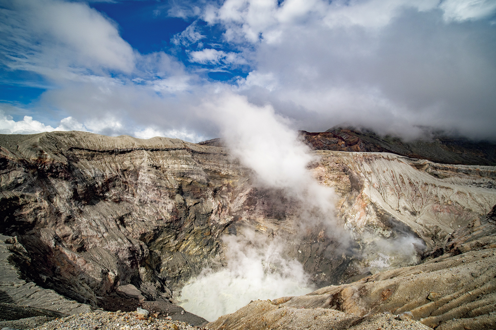
Асо, действующий вулкан в префектуре Кумамото, окружён одной из крупнейших кальдер на планете. Внутри неё пасут коней и коров, весной жгут траву, а на краю старого кратера можно выпить кофе, глядя на равнину Кусасэнри.
Кальдера
Чаша шириной в 18 километров
Асо считают одним из главных действующих вулканов Японии. Вокруг него лежит кальдера, огромная котловина 18 километров с запада на восток и 25 километров с севера на юг, а длина её края около 128 километров. Она появилась примерно 90 тысяч лет назад после гигантского извержения. В центре кальдеры поднимаются пять вершин Асо, и самая беспокойная из них Накадакэ: из её кратера идёт дым, а земля иногда гудит.
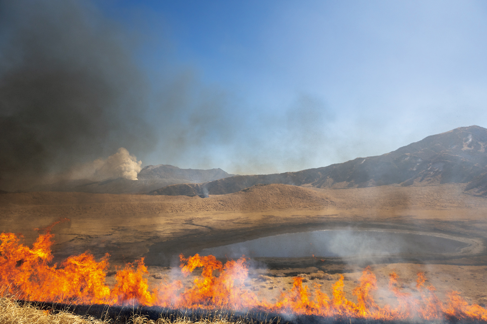
Кальдеру покрывают луга, которые здесь называют тысячелетними. Записи о них ведутся с эпохи Хэйан (794–1185), и создала их не одна природа. Люди веками выжигали сухую траву, пасли скот и косили сено, и только поэтому равнины не заросли лесом. Сегодня этот круговорот признан объектом всемирного сельскохозяйственного наследия, а сам район входит в глобальную геопарковую сеть ЮНЕСКО.
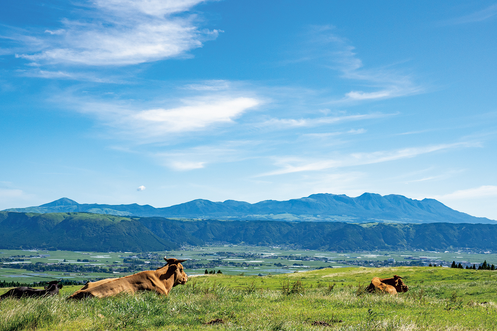
Активный отдых
Верхом, пешком и на велосипеде
Природу, которую вырастил огонь, здесь можно увидеть по-разному. У кратера Накадакэ дым и следы лавы оказываются совсем близко. Подход к кратеру зависит от вулканической активности: когда уровень опасности повышают, его закрывают, поэтому перед поездкой стоит проверить, открыт ли он.
На лугах можно отправиться в конную прогулку, а по внешнему кольцу кальдеры проехать на горном велосипеде с электромотором. Весной после пала чёрная земля покрывается свежей зеленью, и по ней приятно идти под шум ветра и запах травы. Ночью проводят прогулки верхом при луне.
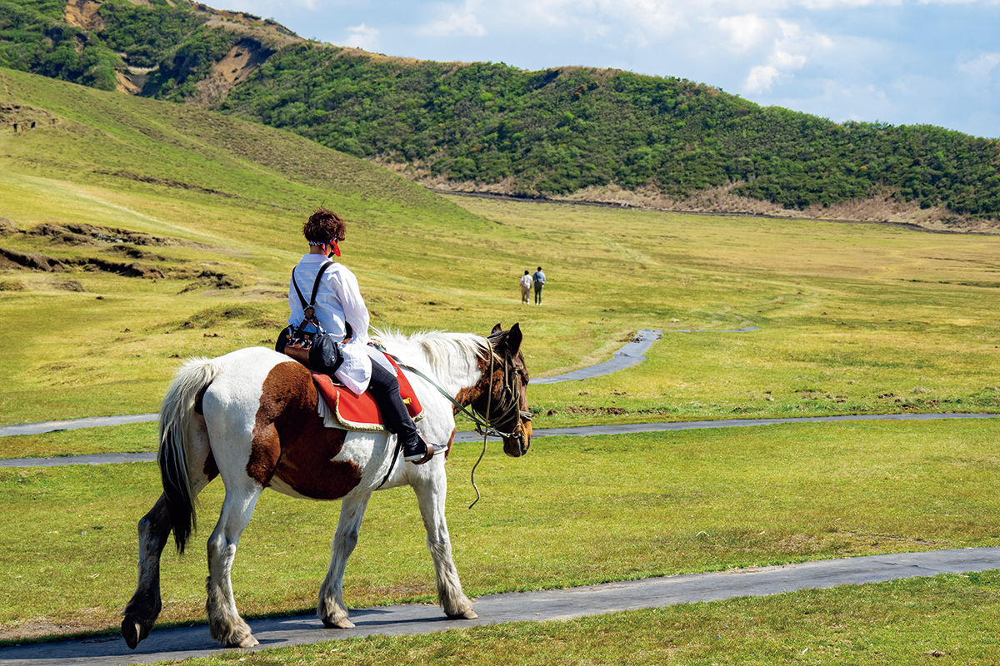
После прогулки стоит попробовать здешнюю еду, которую тоже дают луга. Это «акаусидон», рис с говядиной местной рыжей породы, «таканамэси», рис с маринованной горчичной зеленью, и «дагодзиру», суп с клёцками.
Тем, кто хочет понять, как устроен вулкан, подойдёт пеший тур с гидом. Он проходит у самого кратера, по склонам вокруг вулкана, по горе Кисимадакэ и лугам Кусасэнри. Рассказ гида о природе и культуре Асо помогает увидеть всё это не просто как красивый пейзаж.
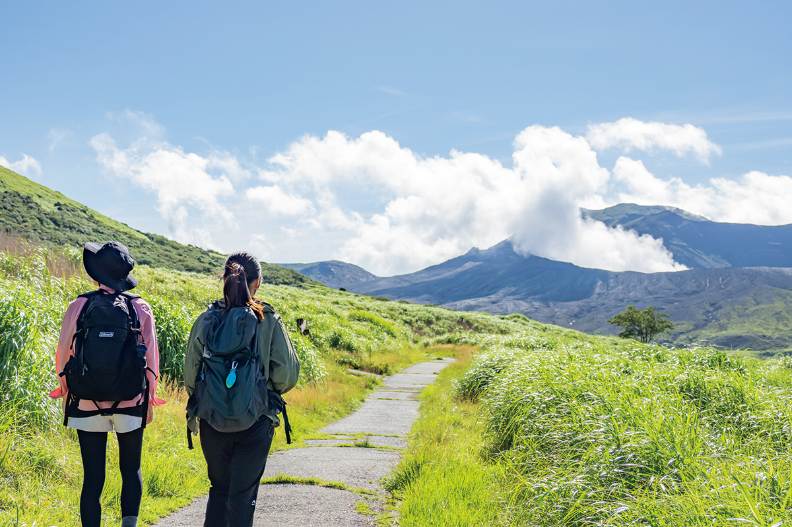
Отдел туризма города Асо
- Телефон
- +81 967-22-3174
Кофе
Kusasenri Coffee Roastery: обжарка на краю старого кратера
Луга Кусасэнри лежат у северного подножия горы Эбосидакэ, одной из пяти вершин Асо, на месте древнего кратера. Это равнина площадью 785 000 квадратных метров с озерцом, которое, как считают, набралось из дождевой воды. В 2021 году у этого вида открылась кофейня с собственной обжаркой Kusasenri Coffee Roastery.
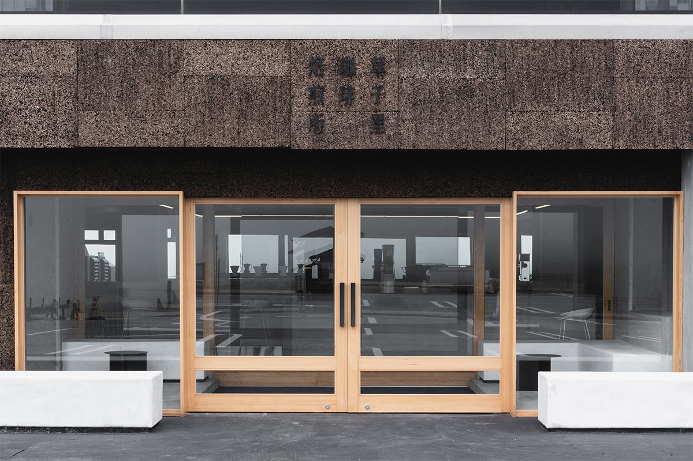
Зал сделан в белых тонах. Войдя с главного входа, гость сразу видит в зеркале отражение природы Асо. Есть стойка, столы и терраса, похожая на открытую веранду японского дома. С какого места ни смотри, перед глазами луга Кусасэнри, а со стойки их видно в зеркальной стене, не выходя из помещения.
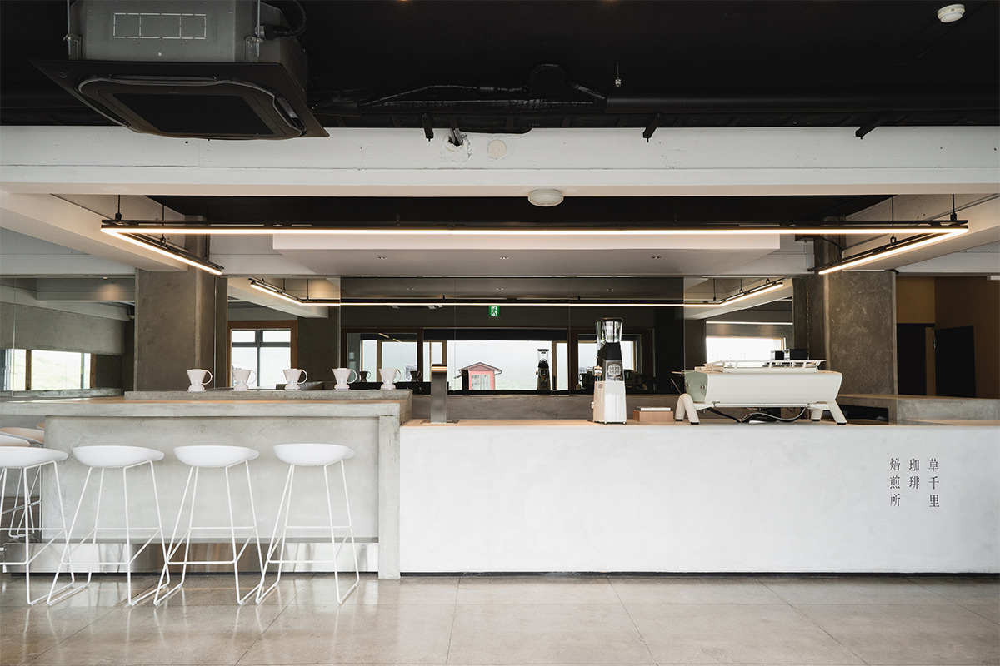
Больше всего внимания в зале привлекает эспрессо-машина Kees van der Westen, производителя из Нидерландов. На ней здесь готовят чашку, которая снимает усталость с дороги. В меню капельный кофе и колд-брю, латте, капучино, американо и эспрессо, а для тех, кто не пьёт кофе, есть содовая с маття и зелёный чай холодного заваривания.
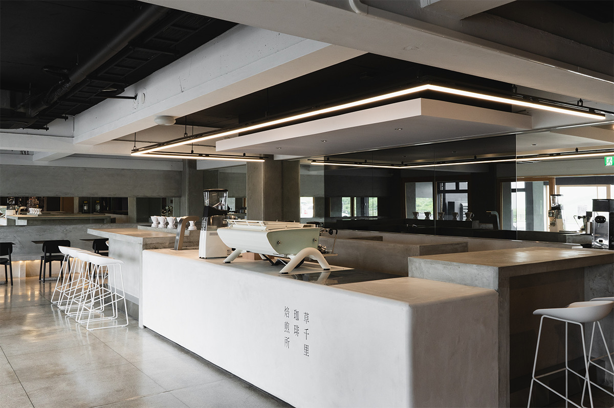
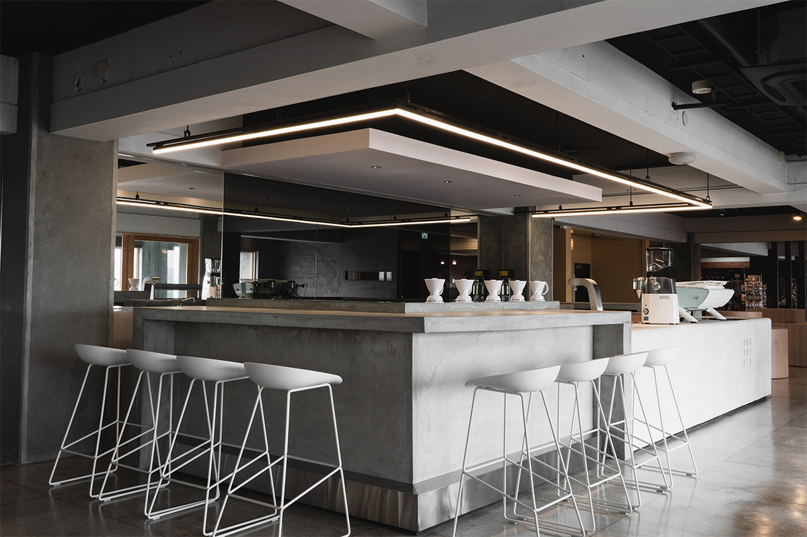
Kusasenri Coffee Roastery
- Адрес
- префектура Кумамото, Асо, Наганокуса, 2391-15
- Телефон
- +81 967-34-0131
- Часы работы
- с 10:00
- Выходные
- нерегулярно
В городе
Coffee Gallery и Toranosuke
Кофейню на лугах открыла компания Coffee Gallery из города Кумамото. Её первый магазин появился в октябре 2019 года в старом квартале у замка Кумамото, в перестроенном купеческом доме, которому около 120 лет. Здесь продают зёрна примерно 20 сортов из 11 стран и обжаривают их из зелёного зерна сразу после заказа. В глубине дома устроена кофейня, а на втором этаже галерея, где часто проходят временные выставки и ярмарки.
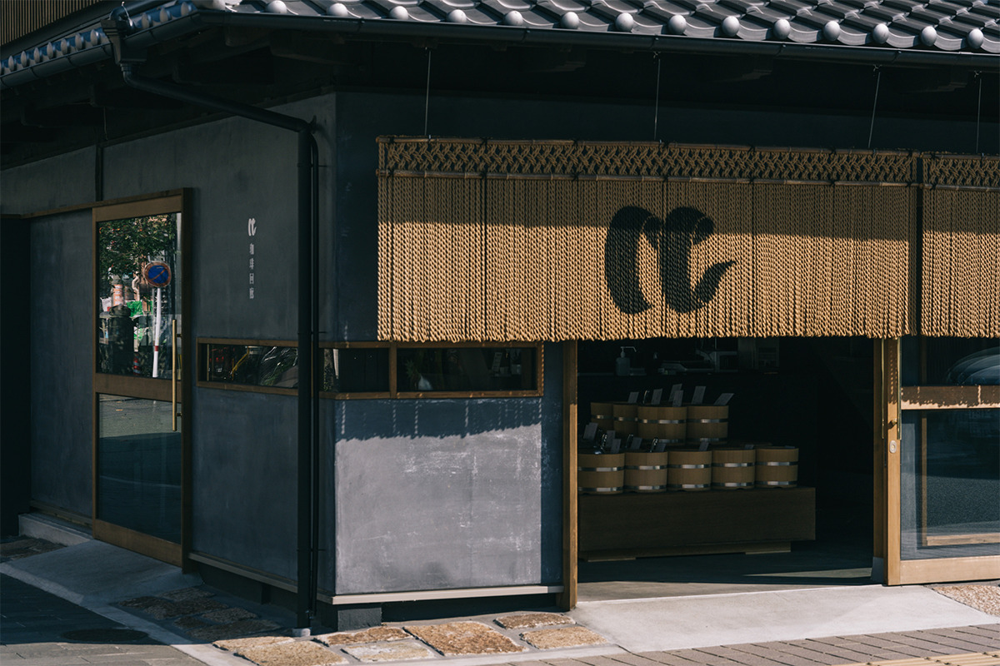
В 2021 году та же компания открыла марку японских сладостей Toranosuke. Это детское имя Киёмасы Като, который построил замок Кумамото.
Стены замка Кумамото выкрашены в чёрный цвет, и магазин Toranosuke сделан по его мотивам. В отделке использована местная штукатурка хиго-сиккуи, стены зеркальные, а каждую сладость выставляют в отдельном оловянном кубике, как экспонат в музее. Сами сладости тоже чёрные. В «ёкан-сандо» сладкое желе из лимона, маття или красной фасоли зажато между чёрным песочным печеньем. Для дайфуку фрукты заворачивают в чёрное рисовое тесто, напоминающее о той же штукатурке.
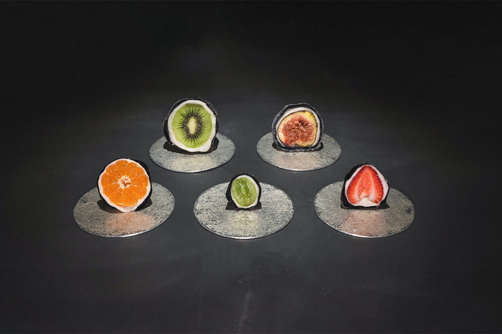
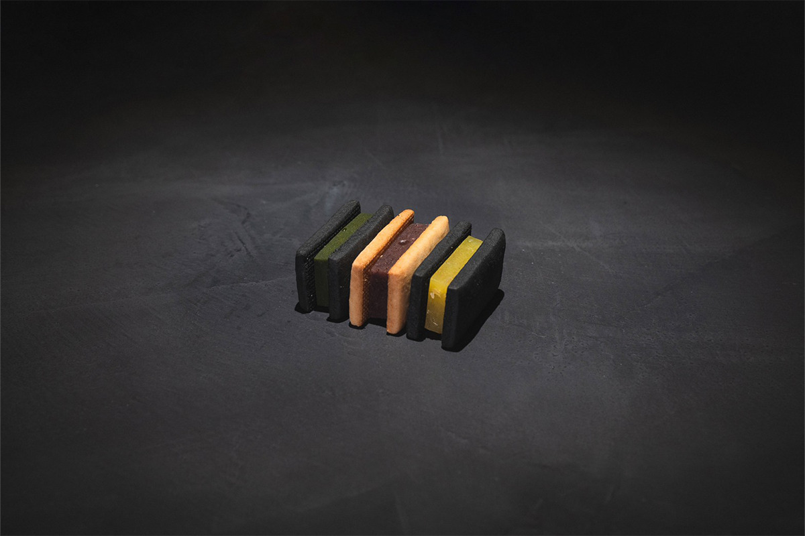
Coffee Gallery
Toranosuke
- Часы работы
- 11:00–18:00